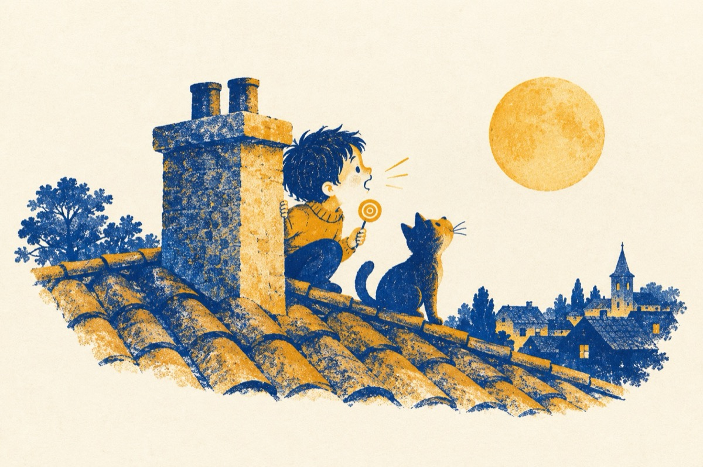

Acadeaua
Membru al Uniunii Scriitorilor Români.
Ne te mai uita așa
Tu copile dragă
Vrei și tu o acadea
O să ți-o trimit în grabă
Dar ai de făcut ceva
Să te urci pe-acoperiș
Și să-ncepi a mieuna
După hornă pe furiș
Și când va răsări luna
Și cu toți ne-am aduna
Atunci îți dăm acadeaua
Și te vom aplauda.
Vasile Groza